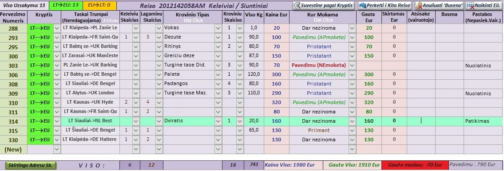

Aimer
Aimer is a tool for international transportation businesses that optimizes
passenger and parcel transportation processes. The system is designed to make work easier for managers and drivers,
ensuring the highest quality of service for your customers.
The program allows you to quickly and without errors plan routes, manage information, keep financial records and generate reports. Manual address entry, region searches and paper data management are replaced by automated solutions - all relevant information and visualization on maps are available with one click.
Get rid of the constant stress due to the flow of information. With Aimer, address management and route coordination become a smooth, simple and secure part of your everyday life.
The program allows you to quickly and without errors plan routes, manage information, keep financial records and generate reports. Manual address entry, region searches and paper data management are replaced by automated solutions - all relevant information and visualization on maps are available with one click.
Get rid of the constant stress due to the flow of information. With Aimer, address management and route coordination become a smooth, simple and secure part of your everyday life.

Here everything is in one place: information about customers, cargo, addresses, etc., its management, financial accounting,
reports, maps and even reminders about the approaching end of the "technical" or insurance. Route planning consists of three main processes :
1. Gathering information for the charter (trip).

You can plan your routes with it, using maps.
Left side
Right side
Page is under development
Center and bottom
Center and bottom